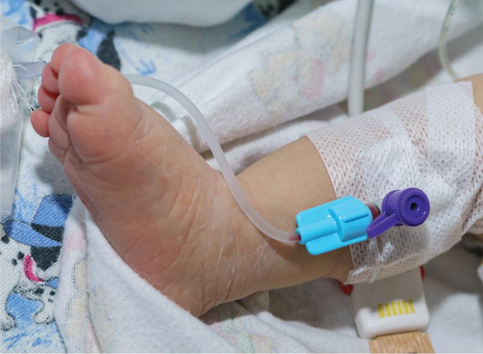
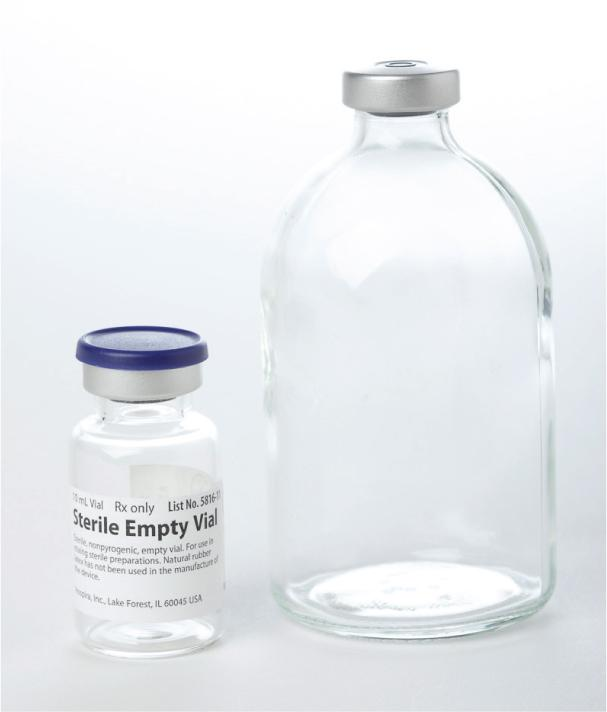
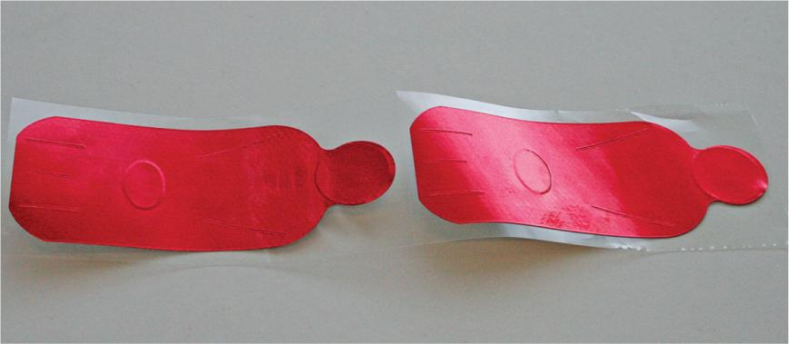
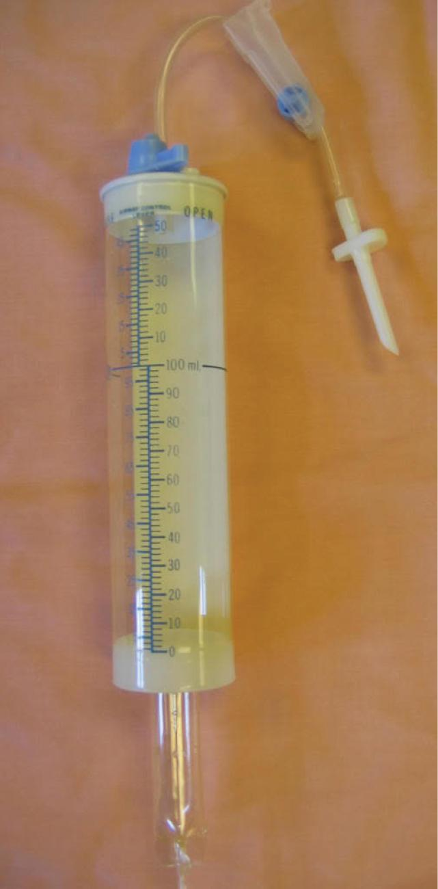

PART 1: CONCEPTS
14.5 Pediatric CSPs
Because the majority of medications prescribed for hospitalized neonatal and pediatric patients are administered intravenously, sterile compounding personnel prepare pediatric CSPs on a frequent basis. The most commonly prepared pediatric CSPs include IV antibiotics, large-volume parenteral (LVP) solutions for hydration, and total parenteral nutrition (TPN) solutions. These parenteral medications typically have a volume of 500 mL or less and are generally isotonic, isoomotic, and pH neutral. (For an overview of the physical and chemical properties of parenteral medications, see Chapter 10.)
Preparation of Pediatric CSPs
CSP ingredients must be considered during the compounding of pediatric preparations. Due to the fragile and still-developing body systems of neonates, preservatives such as benzyl alcohol (found in many multiple-dose containers) must be used with extreme caution in compounding procedures. The body systems of neonates may be unable to process this preservative. In fact, benzyl alcohol may cause damage to multiple organs, potentially triggering benzyl alcohol gasping syndrome, a life-threatening condition. For that reason, preservative-free (PF) ingredients are typically used in the preparation of neonatal CSPs. Personnel should consult their facility’s standard operating procedures (SOPs) for guidance.
In addition to selecting appropriate ingredients, the compounding of pediatric CSPs requires additional oversight to ensure the accuracy of pharmacy calculations. Because of the small size and delicate nature of pediatric patients, even minor errors in dosage calculations of a pediatric CSP could be fatal. Therefore, extra caution should be taken to confirm the accuracy of all calculations.
It is considered best practice to have multiple verification checks performed on the calculations for pediatric CSPs. An initial check is typically performed by sterile compounding personnel when entering or verifying the medication order or computerized provider order entry (CPOE). A second check of the calculations is made just prior to gathering the supplies needed for compounding the CSP. A third check of the calculations should be performed as a component of the final verification. In some facilities, two sterile compounding pharmacists and one sterile compounding technician perform the verification checks; in other facilities, one sterile compounding pharmacist and two sterile compounding technicians perform the checks. Sterile compounding personnel should consult their facility’s SOPs to determine the checking procedures for pediatric CSPs.
Administration of Pediatric CSPs
Pediatric CSPs are primarily given as continuous IV infusions or as intermittent doses. Both IV infusions and intermittent medications are administered using an infusion pump or a syringe pump that is programmed to automatically administer the solution at a safe rate.
Continuous IV Infusion
Many pediatric patients receive a continuous intravenous (IV) infusion during their hospitalization. Pediatric continuous infusions are generally comprised of an IV base solution to which an IV additive, such as potassium chloride, is added. These infusions include LVP solutions, which correct or maintain a patient’s hydration status, and TPN solutions, which provide nutritional therapy to a patient.
LVP Solution Containers
The most common LVPs are IV solutions compounded from a base solution such as 0.9% sodium chloride (also known as normal saline or NS), dextrose 5% in water (D5W), dextrose 5% in normal saline (D5NS), and Lactated Ringer’s (LR) solution. (For more information on these LVP solutions, see Chapter 10.) These base solutions are commonly provided by their manufacturers in flexible plastic bags that expand when fluid is injected into the containers and contract when fluid is withdrawn from the containers. Sterile compounding personnel prepare LVPs by injecting prescribed medications into these base solutions.
TPN Solution Containers
TPN solutions are commonly compounded parenteral nutrition solutions. These solutions contain dextrose and water, which may be mixed with amino acids, fat emulsions, electrolytes, vitamins, and minerals.
TPN solutions are prepared either by manual or automated compounding. In manual compounding, a sterile compounding technician runs the various base solution components through IV tubing and into an empty evacuated container (EEC) or IV bag. Then the technician draws up each TPN additive in an individual syringe and, once checked by a pharmacist, manually injects the additives into the final TPN container. In automated compounding, a sterile compounding technician operates an Automix or Micromix compounder and individually inserts color-coded tubing into separate electrolyte or additive vials. The automated compounder then fills the final TPN container. (For more information on TPN solutions, see Chapter 15.)
Administration of a Continuous IV Infusion
To administer a continuous IV infusion, a peripheral access point is typically established in a hand, arm, foot, or scalp vein. However, some pediatric patients, especially neonates and younger patients, have fragile peripheral veins that may be difficult to access and maintain for IV administration purposes. For these patients, it may be more practical for the nursing staff to establish a central line using a central venous catheter (CVC) or gain IV access through a femoral venous catheter (commonly referred to as a femoral line) or an umbilical venous catheter (also called an umbilical line). In emergency situations when other access points have failed, intraosseous access may be used. During intraosseous infusions, medications or fluids are injected directly into the bone marrow. Other situations may require nurses to establish intra-arterial or subcutaneous access points.
Once an access point has been established, nursing personnel use an IV pump programmed to deliver the medication at a flow rate designated by the prescriber. The use of an IV pump helps to regulate the flow rate, thus reducing the likelihood of inadvertent fluid overload. The continuous infusion CSP is typically given until the patient is discharged or until the prescriber writes an order to discontinue the IV infusion.

Intermittent Dosing
Parenteral medications requiring intermittent dosing are commonly delivered by the IV push (IVP) route of administration. Sterile compounding personnel frequently prepare pediatric IVP medications, especially in facilities that treat neonatal and pediatric patients. Medications used for pediatric IVP administration are supplied in several forms, including compounded syringes, EECs, and IV bags.
Compounded Syringes
Compounded syringes are syringes of medication that may be compounded in the pharmacy and then sent to a nursing unit or may be compounded by nurses for patient administration. These syringes are typically sent from the pharmacy without an attached needle; instead, a sterile syringe cap is placed on the tip of the filled syringe during sterile compounding procedures. Using a tamper-evident, sterile syringe cap rather than a capped needle is a precautionary measure taken to avoid a needlestick from the accidental dislodgment of the needle cap during transport of the syringe. After attaching a tamper-evident, sterile syringe cap, a sterile compounding technician labels the syringe, places it in a plastic bag, and then seals the plastic bag with a tamper-evident, sterile, adhesive seal for delivery to the nursing unit. At the time of medication administration, a nurse retrieves the compounded syringe from the plastic bag; removes the sterile syringe cap, if one was used; attaches a sterile needle or needleless adapter to the syringe; and administers the medication dose to the patient.
Empty Evacuated Containers and IV Bags
As mentioned earlier, a pediatric IVP medication is often prepared using a sterile, empty vial known as an empty evacuated container (EEC) or using a sterile, empty IV bag. EECs are commonly used in pediatric sterile compounding situations and are especially useful for neonatal patients whose size dictates further dilution of a pediatric-strength medication. EECs typically contain a CSP, which is comprised of a sterile, injectable, PF medication and a diluent. Each container typically has a facility-specified concentration of a medication that is custom-made for administration to a neonatal or a pediatric patient.

Pediatric Dilutions
One type of CSP that may be prepared in an EEC is a pediatric dilution. This type of CSP provides accurate parenteral medication dosing for neonates and infants and is typically prepared to a uniform strength or standard concentration. Standardization of medication concentrations helps to reduce the likelihood of medication errors. In a facility that treats numerous neonatal or pediatric patients, pharmacy personnel might prepare a single batch of a drug from which multiple patient doses would be drawn up.
To compound a pediatric dilution to store in an EEC or in an empty IV bag, sterile compounding personnel use two syringes: one syringe to draw up the appropriate volume of diluent and another syringe to draw up the appropriate volume of medication. After having the ingredients checked by a pharmacist, personnel then inject the contents of both syringes into an EEC or into an empty IV bag. At the completion of the injections, personnel affix a tamper-evident, sterile, adhesive seal to the EEC vial stopper or the injection port of the IV bag, which will remain in place until a dose is withdrawn.
Preparing pediatric dilutions in an EEC or in an empty IV bag provides accuracy and efficiency when drawing up a patient-specific CSP. To perform this procedure, sterile compounding personnel use a syringe to draw up the patient’s dose from the pediatric dilution EEC or IV bag. They then attach a sterile syringe cap to the syringe; place a tamper-evident, sterile, adhesive seal over the syringe cap (if a tamper-evident, sterile syringe cap was not used); affix the CSP label to the syringe; place the filled-and-labeled syringe into a plastic bag; and, if necessary, place a tamper-evident, sterile, adhesive seal over the bag’s opening. The sealed plastic bag containing the filled-and-labeled syringe is then sent to the appropriate nursing unit for patient administration.

Intermittent Administration of Prefilled Containers
Once the prepared pediatric CSP arrives on the nursing unit—and just prior to the scheduled dose administration time—the nurse retrieves the filled syringe from the plastic bag and removes the tamper-evident, sterile syringe cap. The nurse then affixes a sterile needle or needleless connector to the syringe and administers the filled syringe via a syringe pump or through the use of a buretrol. Using one of these devices will result in the administration of a pediatric CSP that is generally isotonic, isoosmotic, and pH neutral.
Syringe Pump
If a syringe pump is used to administer the pediatric CSP, the nurse places the filled syringe into the pump. Then the nurse programs the pump to slowly inject the medication over a specified period.
Buretrol
A rarely used alternative method of administering the filled syringe is through the use of a buretrol. This type of tubing contains a large, tube-shaped cylinder. The nurse injects the IVP medication into the cylinder. The medication then mixes with a specific volume of fluid from the patient’s primary IV solution. Finally, the nurse administers the diluted medication through the tubing via an IV pump programmed to slowly infuse the medication over a preset period. A buretrol may also be used to administer a pediatric CSP that has an acidic pH value or one that is hypertonic or hyperosmotic.
